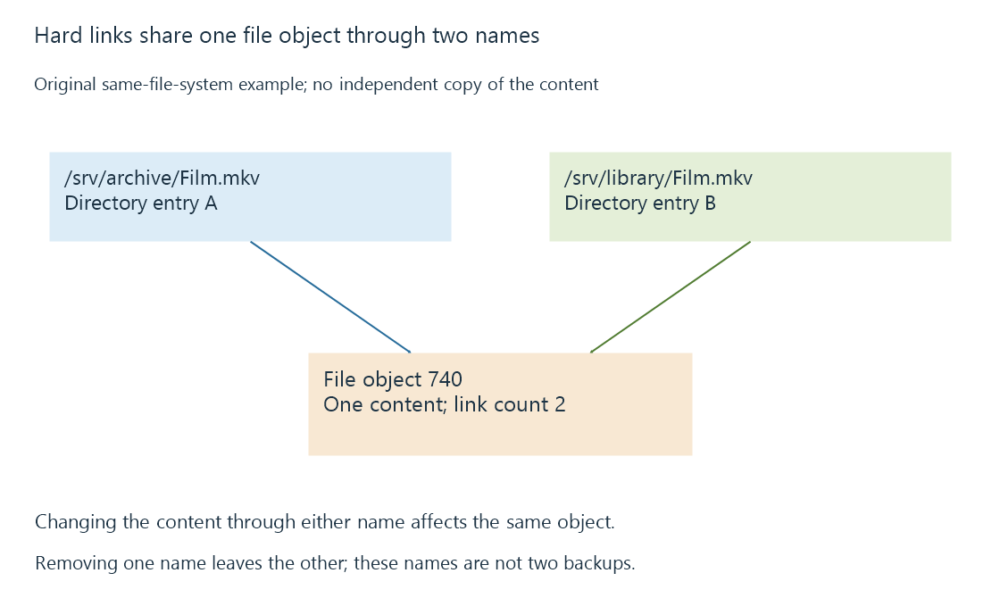

Hard links: several names for one file
Hard links give one file multiple directory names on the same file system, so changes through either name affect the same content.
A hard link gives a file another name on the same file system. Both directory entries refer to the same file object. There is no “original file” containing the data and a separate link containing its pathname.
That is the key difference from a symbolic link, which stores a target path.

Two names, one content
An original example uses an arbitrary file identifier:
/srv/archive/Film.mkv -> file object 740
/srv/library/Film.mkv -> file object 740
Link count: 2
Writing to the file through either name changes the content seen through the other. A hard link is therefore not an independent backup. Corruption or an unwanted overwrite of that shared object affects both paths.
Removing one name reduces the link count but leaves the other name usable. Removing the final name makes the file unnamed; actual reclamation can also wait for remaining open references, according to platform behavior.
The boundary is the file system
| Arrangement | Same content object? | Can ordinarily cross file systems? |
|---|---|---|
| Hard link | Yes | No |
| Symbolic link | Resolves a target path | Yes |
| Independent full copy | No | Yes |
The same-file-system restriction follows from how file identifiers are scoped. A directory entry cannot simply refer to an unrelated inode number on another file system. Windows NTFS hard links likewise remain within the volume.
Hard links normally concern files, not unrestricted directory graphs. Systems restrict directory hard links because arbitrary directory linking would complicate tree traversal and consistency.
A library can encounter both names
If both paths fall within an Emby library's scanned locations, the scanner can encounter the same content through two names. Whether the resulting entries are merged or presented separately depends on the library's matching and organization behavior, not merely on shared disk allocation.
Storage accounting can also differ depending on whether a tool counts path lengths or unique file objects. Two five-GB names do not imply ten GB of distinct stored media in this example. When interpreting duplicates, establish whether the files are independent objects before drawing conclusions from their names or displayed sizes.